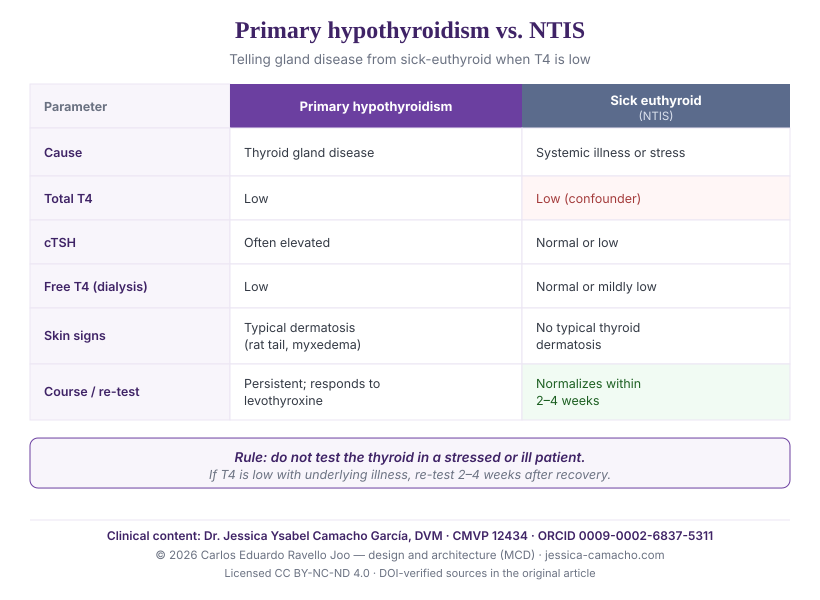

Canine hypothyroidism and dermatology: cutaneous signs, the sick-euthyroid (NTIS) confounder, and the differential diagnosis
Abstract
Background. Hypothyroidism is the endocrinopathy most frequently expressed in the dog's skin. However, its overdiagnosis is common: systemic illness and stress lower thyroxine (T4) without any primary thyroid disease, a phenomenon known as non-thyroidal illness syndrome (NTIS).4,5
Objective. To summarize the dermatological manifestations of canine hypothyroidism and their mechanism, to describe NTIS as a diagnostic confounder, and to propose a practical guide to the differential diagnosis between primary hypothyroidism and sick-euthyroid syndrome.
Key points. Hypothyroid dermatosis presents with non-pruritic bilaterally symmetrical truncal alopecia (the "rat tail"), dry and dull coat, hyperkeratosis, hyperpigmentation, myxedema ("tragic facies"), and a predisposition to secondary infections —pyoderma, demodicosis.1,6 NTIS lowers total and free T4 reversibly; in acutely ill dogs, total T4 was below the reference interval in 100% at admission and normalized within two to four weeks after recovery.4 Differentiation relies on the clinical picture, cTSH, free T4 by equilibrium dialysis, and re-testing after resolution of the underlying disease.2,3
Conclusion. Faced with a low T4, and before prescribing lifelong levothyroxine, ruling out NTIS is mandatory. The diagnosis of hypothyroidism is clinical and multiparametric; it does not rest on a single hormone.
Keywords: canine hypothyroidism; non-thyroidal illness syndrome; NTIS; thyroid hormone; endocrine dermatosis; truncal alopecia; rat tail; myxedema; low T4; differential diagnosis; overdiagnosis.
1. Introduction: thyroid and skin
Starting point Hypothyroidism is a frequent cause of endocrine dermatosis in the dog, but also one of the most overdiagnosed, because a low T4 is not synonymous with thyroid disease: stress and any systemic illness can lower it without the gland being compromised.4
Thyroid hormone is an essential regulator of the skin and coat. Its deficiency produces a recognizable dermatological picture and, frequently, it is the dermatosis that prompts the consultation before the systemic signs. The clinical problem is not only to recognize that picture, but to avoid the reverse error: diagnosing hypothyroidism in a dog that simply has a low T4 for another reason.
This review describes the cutaneous manifestations of hypothyroidism and their mechanism, positions non-thyroidal illness syndrome (NTIS) as the principal confounder, and offers a guide to differentiate primary hypothyroidism from NTIS —a distinction that defines whether an animal receives lifelong treatment or not.
2. Dermatological manifestations of hypothyroidism
Cutaneous picture Hypothyroid dermatosis is a non-pruritic bilaterally symmetrical truncal alopecia —including the "rat tail"—, with a dry, brittle coat, hyperkeratosis, hyperpigmentation, myxedema, and a predisposition to secondary skin infections.1
Thyroid hormone regulates the initiation of the follicular cycle, epidermal differentiation, and sebaceous function; its experimental deficiency in the dog reproduces the characteristic cutaneous changes.1 Clinically, the picture includes:
- Non-pruritic bilaterally symmetrical alopecia, of truncal distribution and in friction zones; tail alopecia produces the "rat tail" appearance.1
- Dry, dull, brittle coat, with poor regrowth after clipping.
- Hyperkeratosis and hyperpigmentation, with dry or greasy seborrhea.
- Myxedema: cutaneous thickening from dermal accumulation of glycosaminoglycans (mucinosis), histochemically documented in hypothyroid dogs, which on the face produces the "tragic" expression.7
- Secondary infections —pyoderma, demodicosis— favoured by impaired skin barrier and cutaneous immunity; in a series of 157 dogs with recurrent pyoderma, hypothyroidism was among the most frequent underlying diseases.6,8
Adult-onset demodicosis deserves separate mention: in a series of 122 dogs it was significantly associated with both hypothyroidism and hyperadrenocorticism, so that its appearance mandates investigating both endocrinopathies.6

3. The confounder: non-thyroidal illness syndrome (NTIS)
Diagnostic caution Non-thyroidal illness syndrome lowers total and free T4 in dogs without thyroid disease, as a response to systemic illness or stress. It is reversible: in acutely ill dogs, total T4 was below the reference interval in 100% at admission and normalized on its own within two to four weeks after recovery.4
NTIS is the principal reason hypothyroidism is overdiagnosed. Any non-thyroidal disease —including severe chronic dermatopathies, deep skin infections, or hyperadrenocorticism itself— can depress thyroid hormone concentrations without the gland being diseased.5 The magnitude of the decrease tends to correlate with the severity of the underlying disease.5
The practical consequence is direct: measuring thyroid function in the middle of illness or stress, and interpreting the result in isolation, leads to diagnosing a hypothyroidism that does not exist. The quantitative evidence is compelling: the spontaneous normalization of T4 within two to four weeks after recovery demonstrates that the gland was never diseased.4 A recent prospective study adds a caution about the recovery phase: TSH can rise transiently without true hypothyroidism, and no dog showed concurrently low total T4 and high TSH during the process.10
4. Basis of the differential diagnosis
Key concept Differentiating primary hypothyroidism from NTIS requires a multiparametric approach: no single hormone resolves it. The combination of clinical picture, cTSH, free T4 by equilibrium dialysis and, when doubt persists, re-testing after recovery, is what distinguishes a glandular disease from a reversible functional alteration.2,3
In primary hypothyroidism, the pituitary-thyroid axis responds to the fall in thyroid hormone by raising thyrotropin (cTSH); the study of adenohypophyseal function shows distinct patterns in primary hypothyroidism compared with non-thyroidal illness.2 Therefore, an elevated cTSH accompanying a low free T4 supports primary hypothyroidism, whereas a normal or low cTSH with a low total T4 points toward NTIS.
Two important caveats to avoid over-interpretation: cTSH is not perfectly sensitive —a proportion of dogs with primary hypothyroidism keep cTSH within the reference interval—9, and free T4, ideally measured by equilibrium dialysis, resists the effect of NTIS better than analogue immunoassay but can also fall in severe non-thyroidal disease.11 The assessment of dogs with low plasma T4 confirms that the distinction requires integrating several parameters, not relying on one.3
5. Practical guide: primary hypothyroidism versus NTIS
Clinical application Faced with a dog with low T4, the key decision is whether or not to treat for life. Concordance between an established hypothyroid dermatosis, an elevated cTSH, and a low free T4 supports primary hypothyroidism; a low T4 in a stressed or ill patient, without the typical dermatological picture and with a normal cTSH, points to NTIS and mandates re-testing after recovery.
5.1. What to assess in the patient with low T4
- Dermatological picture: is there an established hypothyroid dermatosis (truncal "rat tail" alopecia, myxedema, hyperkeratosis, dull coat) or is the skin spared?1
- Systemic status: is there a concurrent disease or stress that would account for NTIS? If so, the low T4 is suspect for a confounder.5
- Hormone profile: do not measure total T4 alone. Combine total T4, cTSH, and free T4 (ideally by equilibrium dialysis).3
- Timing of measurement: avoid testing in the midst of acute illness or stress; if the low T4 appears in that context, defer the decision.4

5.2. Orienting differences
| Parameter | Primary hypothyroidism | Sick euthyroid (NTIS) |
|---|---|---|
| Cause | Primary thyroid deficiency (gland disease). | Systemic illness or stress; healthy gland. |
| Total T4 | Low. | Low (confounder). |
| cTSH | Often elevated (may be normal in some cases).2 | Normal or low. |
| Free T4 (dialysis) | Low. | Normal or only mildly low.3 |
| Skin signs | Established hypothyroid dermatosis (rat tail, myxedema).1 | No typical thyroid dermatosis; the underlying disease predominates. |
| Course / re-test | Persistent; responds to levothyroxine. | Normalizes within 2–4 weeks after recovery.4 |

5.3. Decision rule
The rule that protects the patient from overtreatment is simple: do not prescribe lifelong levothyroxine on the basis of an isolated low total T4. If NTIS is suspected because of concurrent illness or stress, the decision should be deferred, the underlying disease controlled, and thyroid function re-tested after recovery. Only clinical and hormonal concordance —not an isolated value— justifies the diagnosis of hypothyroidism and its lifelong treatment.
6. Clinical implications
Conclusion Hypothyroidism expresses itself in the skin, but the skin and a low T4 also lie when there is another underlying disease. The diagnosis is clinical and multiparametric; prudence in the face of a low T4 avoids unnecessary lifelong treatment.
Hypothyroidism is real and treatable, and its dermatosis is recognizable. But its overdiagnosis —driven by excessive confidence in a low total T4— subjects healthy dogs to lifelong treatment. Non-thyroidal illness syndrome reminds us that the hormone also falls for reasons unrelated to the gland, and that the correct decision demands context, several parameters, and, when needed, the patience to re-test. This review is complementary to the analysis of hyperadrenocorticism and the skin —its endocrine counterpart— and to the owner-directed article on the dog that licks and loses hair.
References
Peer-reviewed veterinary literature. Each reference was independently verified at its original source (PubMed / publisher).
- Credille KM, Slater MR, Moriello KA, Nachreiner RF, Tucker KA, Dunstan RW (2001). The effects of thyroid hormones on the skin of beagle dogs. J Vet Intern Med 15(6):539-546. PMID 11817058
- Diaz-Espiñeira MM, Mol JA, Rijnberk A, Kooistra HS (2009). Adenohypophyseal function in dogs with primary hypothyroidism and nonthyroidal illness. J Vet Intern Med 23(1):100-107. doi:10.1111/j.1939-1676.2008.0240.x · PMID 19175728
- Diaz-Espiñeira MM, Mol JA, Peeters ME, Pollak YW, Iversen L, van Dijk JE, Rijnberk A, Kooistra HS (2007). Assessment of thyroid function in dogs with low plasma thyroxine concentration. J Vet Intern Med 21(1):25-32. PMID 17338146
- Bolton TA, Panciera DL, Voudren CD, Crawford-Jennings MI (2024). Thyroid function tests during nonthyroidal illness syndrome and recovery in acutely ill dogs. J Vet Intern Med 38(1):111-122. doi:10.1111/jvim.16947
- Kantrowitz LB, Peterson ME, Melián C, Nichols R (2001). Serum total thyroxine, total triiodothyronine, free thyroxine, and thyrotropin concentrations in dogs with nonthyroidal disease. J Am Vet Med Assoc 219(6):765-769. doi:10.2460/javma.2001.219.765
- Pinsenschaum L, Chan DHL, Vogelnest L, Weber K, Mueller RS (2019). Is there a correlation between canine adult-onset demodicosis and other diseases? Vet Rec 185(23):729. doi:10.1136/vr.105388
- Doliger S, Delverdier M, Moré J, Longeart L, Régnier A, Magnol JP (1995). Histochemical study of cutaneous mucins in hypothyroid dogs. Vet Pathol 32(6):628-634. doi:10.1177/030098589503200603 · PMID 8592797
- Seckerdieck F, Mueller RS (2018). Recurrent pyoderma and its underlying primary diseases: a retrospective evaluation of 157 dogs. Vet Rec 182(15):434. doi:10.1136/vr.104420 · PMID 29419485
- Dixon RM, Mooney CT (1999). Evaluation of serum free thyroxine and thyrotropin concentrations in the diagnosis of canine hypothyroidism. J Small Anim Pract 40(2):72-78. doi:10.1111/j.1748-5827.1999.tb03040.x · PMID 10088086
- Corsini A, Del Baldo F, Lunetta F, Ribichini S, Giunti M, Fidanzio F, Fracassi F (2024). Total thyroxine, triiodothyronine, and thyrotropin concentrations during acute nonthyroidal illness and recovery in dogs. J Vet Intern Med 38(3):1345-1352. doi:10.1111/jvim.17059 · PMID 38654457
- Bennaim M, Shiel RE, Evans H, Mooney CT (2022). Free thyroxine measurement by analogue immunoassay and equilibrium dialysis in dogs with non-thyroidal illness. Res Vet Sci 147:37-43. doi:10.1016/j.rvsc.2022.03.016 · PMID 35430462

Dr. Jessica Ysabel Camacho García
ORCID 0009-0002-6837-5311 · Professional verification · Last reviewed: 19 June 2026